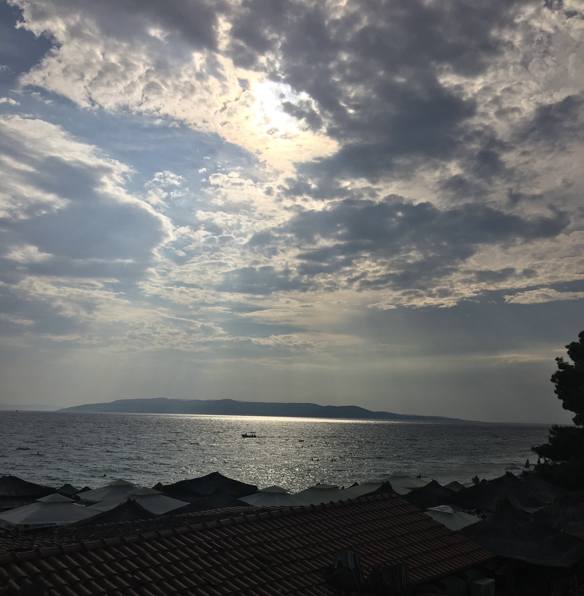
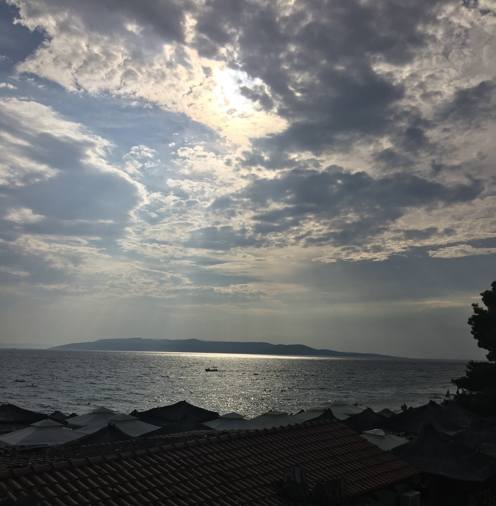
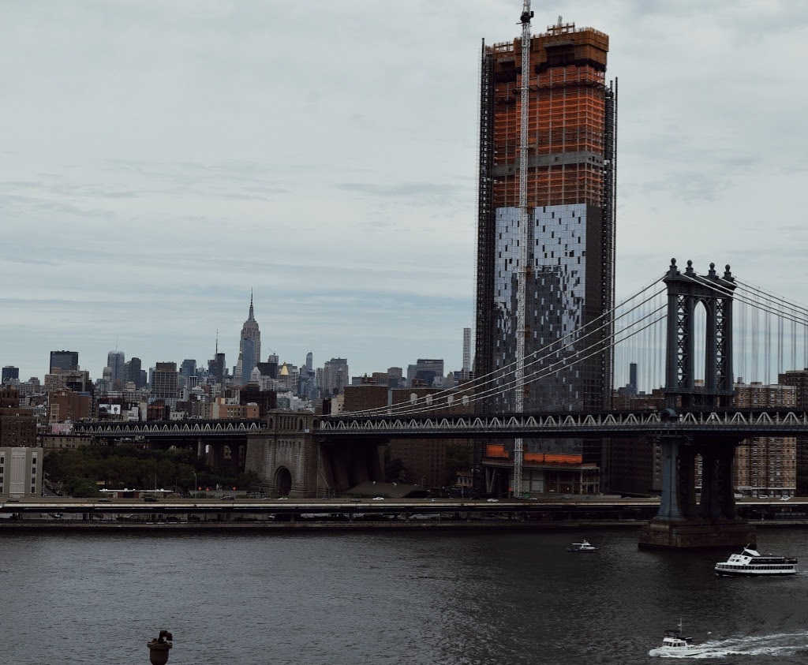
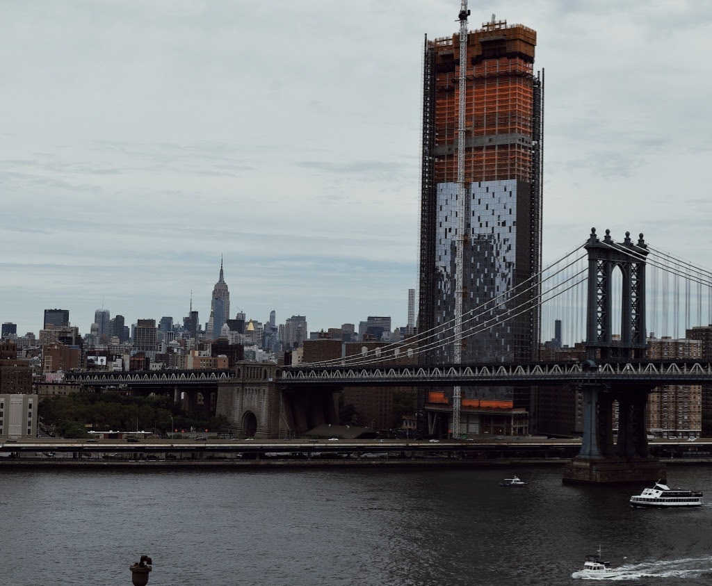
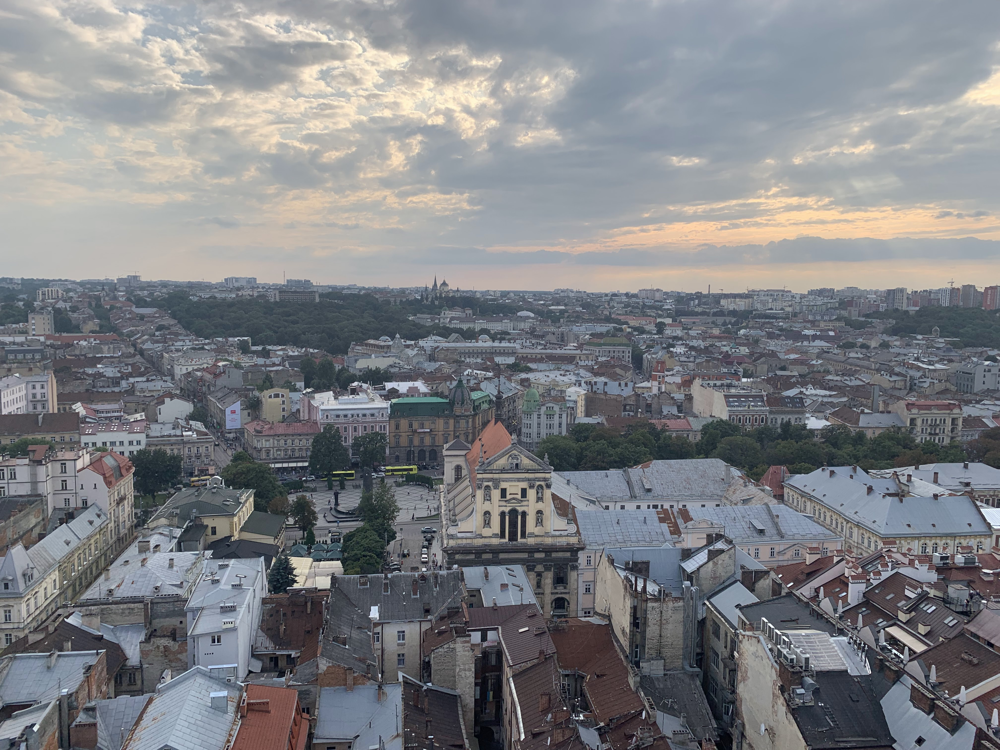
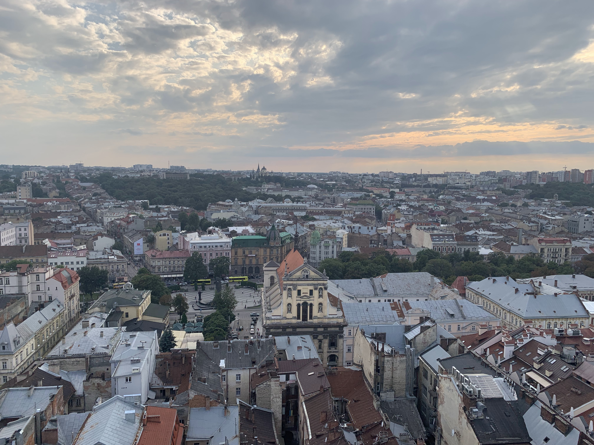

Travel
Chicago
Chicago is a must-see city perfect for a fun weekend. There are so many things to do, my favorite including going up in the Sears Tower and walking around by the river walk where you can enjoy the beautiful views.

Chernobyl
Chernobyl has a lot of History and visiting this ghost town is a very unique experience. To get into the city after the nuclear disaster, you need to check in and you are required to carry around a radioactive tracker for your saftey.
Croatia
Croatia has a beautiful coastline where the mountains meet the Adriatic Sea. With so many tourists coming to see such a unique site, you can hear a huge variety of languages being spoken when in Croatia.
 

Dominican Republic
The DR is a perfect place for a relaxing vacation. The country has a beautiful culture and my favorite music. It's also the home of one of my favorite artists, Ozuna

New York
New York is a city where The American Dream feels real. I love the diversity of people in this city and that the city never sleeps. I hope to move here after college for a few years and be able to experience NYC as a local.
 

Ukraine
Ukraine has many historic cities across the country, attracting many tourists in recent years, including Ivano Frankivsk, the city I was born in. The Carpathian mountains stretch across the SouthWestern corner of Ukraine, and in 2020, I climbed the tallest mountain in Ukraine, Hoverla, at 2,061 meters high.
 
